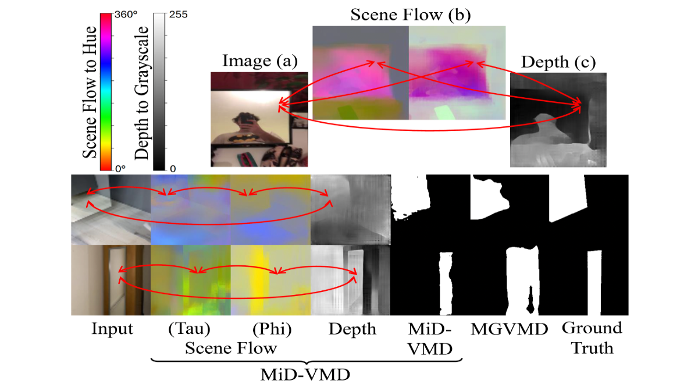
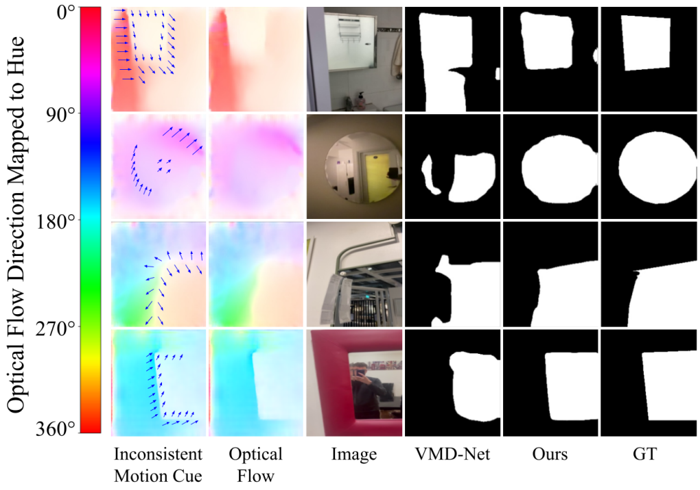

contact.alexwarren [at] gmail [dot] com
[Google Scholar] [Gallary]I am currently a Graduate Teaching Assistantship PhD Computer Science (Deep Learning Computer Vision)
at Swansea University (co-supervised by City University Of Hong Kong Link).
News
[05. 2026] I will serve as a reviewer for NeurIPS 2026 and IJCV.
[01. 2026] I will serve as a reviewer for ICML 2026.
[11. 2025] I will serve as a reviewer for CVPR 2026 and EAI.
[11. 2025] A paper is accepted to AAAI 2026 (Oral)
[07. 2025] I will serve as a reviewer for AAAI 2026.
[06. 2025] I have been awarded Associate Fellowship of Advance HE (AFHEA).
[05. 2025] I will serve as a reviewer for NeurIPS 2025.
[02. 2024] A paper is accepted to CVPR 2024.
Professional Activities
ICML 2026 Silver Reviewer
Associate Fellowship of Advance HE (AFHEA)
Poster Presentation at 1st Cardiff Image and Vision Computing Workshop
Conference Reviewer: CVPR 2026, ICML 2026, AAAI 2026, NeurIPS 2025 / 26
Journal Reviewer: IJCV, EAI
Publications
|
 |
Video Mirror Detection with the Motion-in-Depth Cue 1Swansea University, 2City University of Hong Kong, 3Huawei Technologies, 4Chinese University of Hong Kong Proceedings of the AAAI Conference on Artificial Intelligence (AAAI), 2026. Oral Presentation
|
|
 |
Effective Video Mirror Detection with Inconsistent Motion Cues 1Swansea University, 2City University of Hong Kong IEEE/CVF Conference on Computer Vision and Pattern Recognition (CVPR), 2024. |
Education
Swansea University - PhD Computer Science (Deep Learning, Computer Vision) [Ongoing]
City University Of Hong Kong - MSc Computer Science (Artificial Intelligence Stream)
Swansea University - BSc Computer Science
Skills & Research Areas
Deep Learning
Computer Vision
Machine Learning
Artificial Intelligence
Graduate Teaching Assistant at Swansea University
Visual Computing (CS-256)
Writing Mobile Apps (CSC306)
Algorithms (CS-270)
Database Systems (CS-250)
Artificial Intelligence (CS-265)
Advisory Sessions (Undergrad/Postgrad)